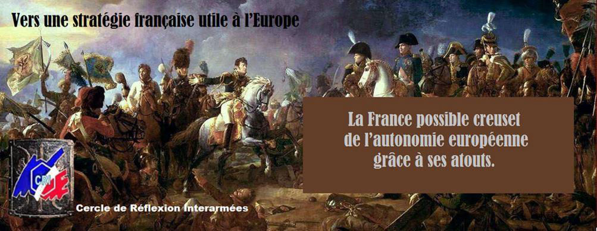
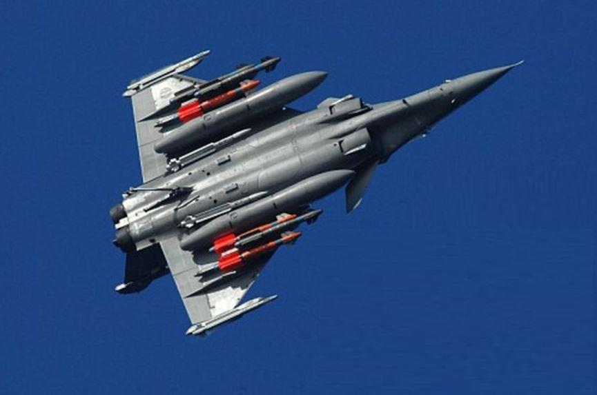
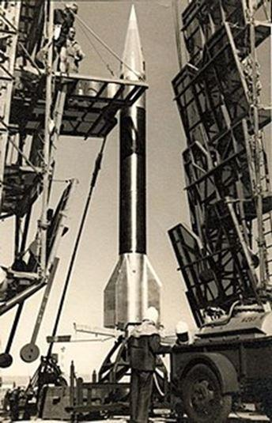
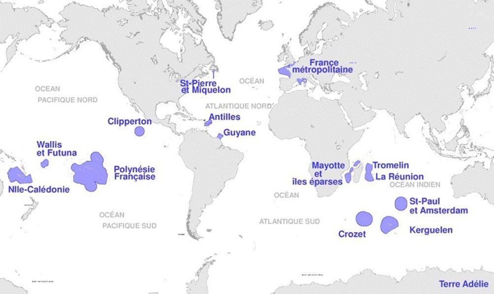
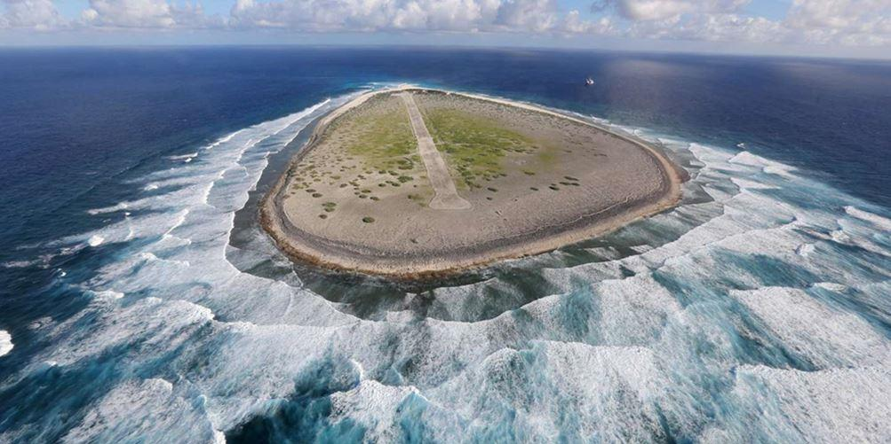
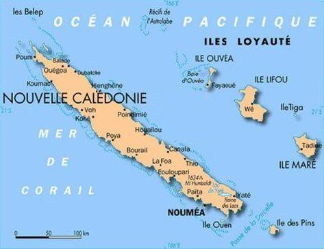
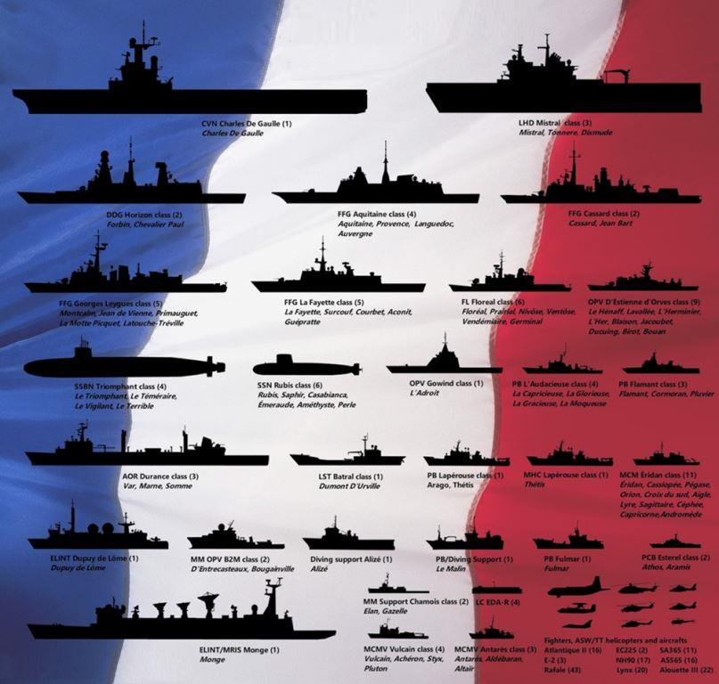
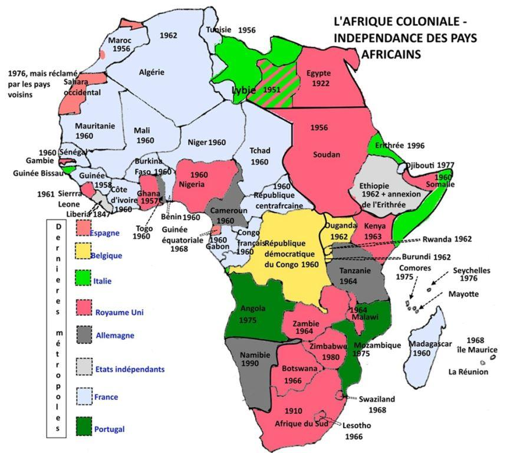
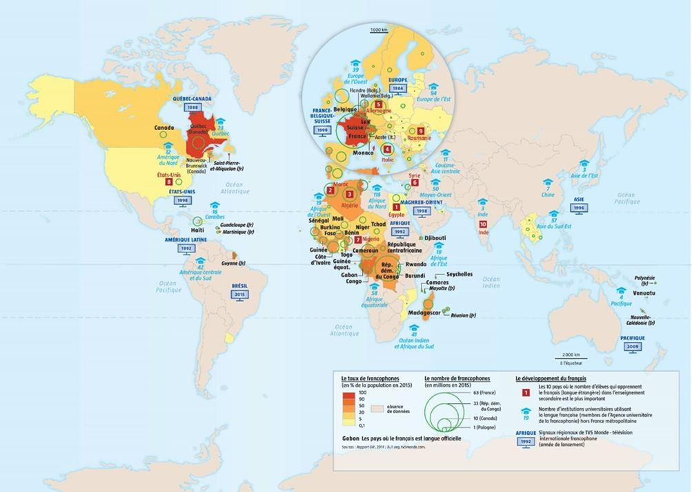
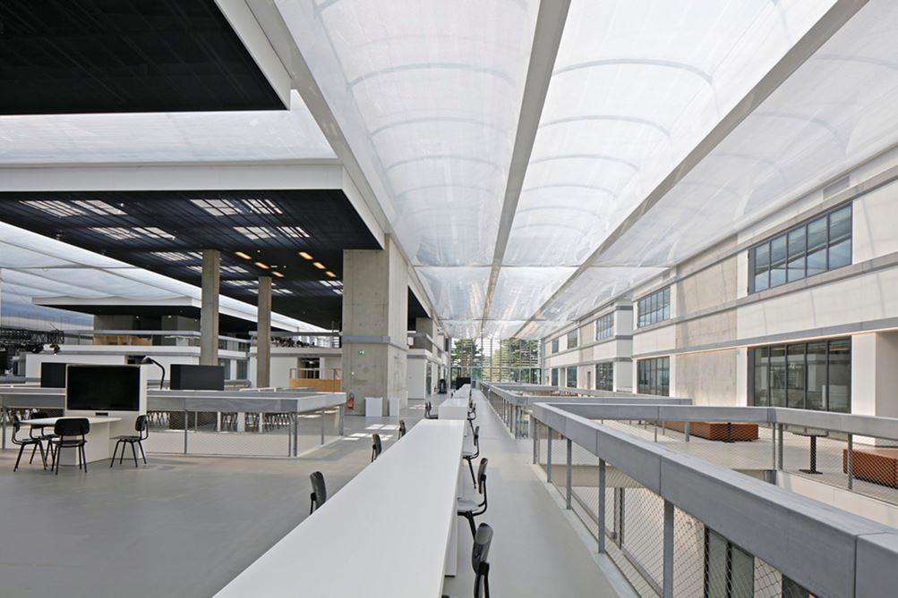

La France possible creuset de l’autonomie européenne grâce à ses atouts
par Cercle de Réflexion Interarmées

Si nous voulons bien regarder les atouts dont peut disposer notre pays, nous constaterons qu’ils sont notables.
L’arme nucléaire
Outre le fait que sa possession a conforté le siège de la France comme membre permanent du conseil de Sécurité de l’ONU, demain, comme hier et aujourd’hui, la dissuasion nucléaire sera au cœur de l’équilibre du monde. L’Europe ne pourra en faire l’impasse.
« Un pays qui n’a pas la puissance atomique est obligé de s’en remettre pour sa sécurité et son indépendance à un autre qui l’a !» affirmait le Général de Gaulle.
C’est bien la situation de l’Europe depuis 1949. La France est maintenant, depuis le Brexit, formellement, légalement le seul pays de l’UE à disposer de cette puissance atomique.
Ce fut et c’est un atout pour elle, et pour l’Europe.
En effet peut-on imaginer une situation où les États européens voisins alentour de la France seraient menacés dans leur survie sans que la France ne le soit aussi ? C’est cette constatation, cette évidence irréfutable, partagée par la France et la Grande Bretagne, qui les a conduites, en 1995, à concevoir et bâtir une dissuasion concertée qui ne peut que les renforcer.
La maîtrise de l’espace
En matière de défense la France a toujours été en pointe et a su partager avec ses alliés.
Véronique (VERnonElectrONIQUE), petite fusée née au centre militaire de VERNON en 1948, est devenue la rayonnante Ariane. Son premier lancement aura lieu de la modeste base spatiale Kourou en 1968.
Avec l’Amérique, la Russie, et avant la Chine, la France a su maîtriser les puissants propulseurs à poudre indispensables à une dissuasion nucléaire «tous azimuts» et de portée stratégique, comme le voulait le Général de Gaulle.
Hier la France était un acteur majeur européen de la militarisation de l’espace, avec ses satellites de transmission et d’observation et toute la chaîne d’exploitation.
« Aujourd’hui, nos alliés et nos adversaires militarisent l’espace. Et alors que le temps de la résilience se fait de plus en plus court, nous devons agir. Nous devons être prêts. » Florence Parly, 25/07/2019.
La France est au rendez-vous de «l’Arsenalisation» de l’espace, traduction française de la «weaponisation» américaine, au moins dans une dimension d’autodéfense.
L’Armée de l’air intègre l’espace à son domaine d’action. Sont donc créés un Commandement organique et opérationnel, les centres d’opérations qui assurent la mise en œuvre des moyens spécifiques. Le segment spatial est rénové et renforcé de 9 satellites couvrant les trois domaines ; observation/imagerie, renseignement, communications, plus l’alerte et, désormais, les moyens spatiaux d’auto-défense - dans la conformité du traité de 1967.
La France est partageuse. C’est aussi un outil, un atout national à usage européen.
La France, carrefour du Monde
Tout d’abord, la position géographique de la France métropolitaine en fait un carrefour séparant, ou unissant, l’Europe germanique et l’Europe latine, l’Amérique à l’Europe, l’Europe à l’Afrique. Ce statut la rend indispensable dans les relations intra-européennes et internationales.
Imaginons, un instant, que la France, à l’instar du Royaume-Uni, quitte l’« Europe ».
Les conséquences seraient sismiques et aboutiraient à la fin de cette organisation internationale.
À ce simple constat, il faut ajouter sa puissance économique. La France est décriée, souvent par ses propres citoyens, mais elle demeure la cinquième puissance économique au monde et, depuis la fin des années quatre-vingt, après avoir été la première, la deuxième en Europe derrière l’Allemagne.
Notons cependant qu’un PIB ne définit pas la puissance. Si cela était, la Chine aurait pu être la première puissance mondiale depuis le XIXème siècle et la Russie, avec un PIB voisin de celui de l’Italie ou de l’Espagne, ne disposerait pas du statut qui est le sien.
Ces seuls atouts pourraient lui permettre de peser sur la politique de l’UE à condition qu’elle veuille bien parler fort, menacer, imposer et revenir dans la ligne gaullienne d’une Europe des nations. Ce serait radicalement en contradiction avec les usages actuels…
Mais la France a bien d’autres atouts dans sa main.
La France : 1er domaine sous-maritime au monde, 2ème domaine maritime 1
Mais la France n’est pas seulement européenne. Elle est américaine, africaine, océanienne, antarctique…Son sol se trouve réparti sur l’ensemble de la planète. Elle dispose d’une immense Zone Economique Exclusive – ZEE - et plus encore pour la zone sous-marine associée. La possession d’innombrables îles et archipels - «ces poussières d’Empire» trop souvent oubliées - ajoutés aux côtes métropolitaines, lui concèdent, depuis 1994, ce formidable espace maritime.
Son domaine sous-maritime, avec une zone d’exploitation exclusive du plateau continental à 350 Nm des côtes, est le premier du monde avec 11 614 000 km² et sa ZEE - avec son extension à 200 Nm des côtes, la deuxième au monde avec 11 035 000 km², derrière celle des États-Unis: 11 351 000 km².
L’outre-mer français offre ainsi un énorme capital de ressources et de développement. Cette superficie marine pourrait s’accroître de 1 million de km² si des demandes de la France venaient à être validées. La France est ainsi le pays qui se répartit sur le plus grand nombre de fuseaux horaires. Ses terres relèvent de 12 fuseaux contre 10 pour les États-Unis et 9 pour la Russie.
Ce domaine gigantesque demeure largement inconnu ou sous-estimé des autorités. Outre la richesse halieutique, ses fonds marins recèlent d’immenses quantités de matières premières allant du pétrole aux terres rares.
Aujourd’hui, face à la demande, l’exploitation des terres rares est devenue stratégique.
La Chine, avec la Corée du Nord, sont les premiers producteurs mondiaux actuels des terres rares. La Chine seule extrait 120 000 t sur les 170 000 t mondiales. Elle peut aisément spéculer sur les coûts, et établir un contrôle sur toute l’industrie. 2
Mais qui s’en soucie ? L’actualité nous montre qu’il s’agit d’une richesse encore bien mal connue, voire sous-estimée des autorités, en conséquence très largement sous exploitée ou même inexploitée. Ces régions, lointaines mais pourtant, terres françaises, ne reçoivent pas l’attention qu’elles méritent.
Ainsi Tromelin ; îlot français de l’Océan indien, apparemment de peu d’utilité, simple banc de sable, venteux, sans source d’eau, de 1,5 km de long sur 0,7 km de large, juste bon pour des missions de scientifiques ou météorologues avec quelques soldats pour faire flotter le drapeau tricolore ! Or, un œil averti et vigilant a découvert qu’un traité de gestion conjointe, signé de façon aussi confidentielle qu’inconsciente le 1er juin 2010, allait livrer, cette micro-terre française de l'Océan indien, à l'Île Maurice, avec une ratification définitive, prévue pour le 18 janvier 2017.
Une campagne, avec pétition en ligne, menée par Philippe Folliot, vice-président de la Commission de la Défense a eu raison de cet invraisemblable projet. 280.000 km² de domaine maritime et les richesses du sous-sol sous-marin ont ainsi été ainsi sauvés.
Le risque avéré, au-delà des îlots de Tromelin ou Clipperton, était d’ouvrir la porte aux revendications d'autres pays sur les autres îles et territoires français, des Terres australes à l’île de la Passion au large du Mexique…
L’indifférence de la France métropolitaine à l’égard de l’avenir de la Nouvelle Calédonie est pour le moins étonnante. Ce territoire, pleinement français, subit depuis de nombreuses années l’agitation politique de quelques représentants de la collectivité canaque, enfermés dans des traditions hors d’âge. L’indépendance aurait été dramatique pour l’ensemble de la population et fait perdre à la France une position majeure dans le Pacifique et de considérables ressources minières.
La Chine y a déjà pris pied. Canaques et Caldoches ont rejeté jusqu’à présent l’indépendance. Pour le moment elle reste dans le giron français.
La course aux ressources rares pour nos industries de la communication sera fatalement facteur de contestations et de conflits. « D'ici 20 ou 30 ans, si nous ne les exploitons pas économiquement, il y aura des revendications de nos territoires d'outre-mer » alerte Bernard Planchais, ancien Directeur général délégué de DCNS, devenue Naval Group.
Le contrôle des espaces maritimes, hérités de plus de quatre siècles d’explorations, de découvertes, de combats navals et de campagnes lointaines, est une des clefs actuelles de la puissance et de l'influence de la France sur la scène internationale.
Ajoutons que les moyens insuffisants de notre Marine Nationale l’empêchent d’en assurer la surveillance.
Ce type de question s’est déjà posé à l’émergence du Nucléaire dès 1945.
Ainsi, pourquoi ne pas créer, pour leur exploitation, un organisme équivalent au CEA de l’époque gaullienne ; il permettrait une formidable mise en valeur de ces ressources.
L'ordonnance du 18 octobre 1945, signée par le général de Gaulle, alors chef du gouvernement, marque la création du Commissariat à l'Énergie Atomique (CEA). Il avait pour vocation de contribuer à l’indépendance du pays en « prenant toutes les mesures utiles pour mettre la France en état de bénéficier du développement de cette branche de la science ».
Le CEA est à l’origine de notre dissuasion nucléaire, puis du développement de notre industrie nucléaire électrogène, apportant à la fois indépendance politique et énergétique et, par voie de conséquence notre statut actuel.
S’agissant de la dissuasion, avec le général Ailleret, le général de Gaulle en avait défini la doctrine. La France doit être indépendante. Mais ce privilège s’est acquis intelligemment et patiemment : notre pays mit six ans pour sortir de l’organisation militaire de l’alliance atlantique.
Et cette durée fut mise à profit pour apprendre le plus possible…Il ne faut pas oublier, l’attitude particulièrement hostile, à l’époque, des « Européens » et parmi eux de quelques Français.3
La maîtrise de toutes les technologies associées à l’exploitation de ces minerais stratégiques et à leur industrialisation serait pour la France et l’Europe un formidable défi à relever, analogue à celui du nucléaire en son temps.
Maîtrise des techniques de liaisons sous-marines et des échanges intercontinentaux
90 % des échanges mondiaux transitent par voie maritime de surface. À ce transit visible il faut ajouter les très névralgiques, autant que vulnérables, échanges d’informations par les autoroutes sous-marines. Par ces voies transitent les milliards de mégabits de nos messages, familiaux, économiques ou militaires.
Les 90 % d’échanges commerciaux matériels, transitant par la mer, dépendent des communications intercontinentales numériques, qui, quant à elles, passent à 99 % par la mer. Elles utilisent environ 430 câbles sous-marins en service [14].
Entre 2015 et 2020 nous devrions voir leur triplement ! C’est un domaine technique dans lequel la France excelle. Elle dispose de la filiale câblière « Orange-marine » de l’opérateur éponyme et d’Alcatel Submarine Networks (ASN). Ils sont les leaders mondiaux depuis la fabrication jusqu’aux interventions sur les réseaux de câbles sous-marins.
Ces réseaux deviennent enjeu de pouvoir. Leur sécurité est essentielle car l'économie mondiale et la sécurité des pays en dépendent. Ce n’est pas seulement pour imposer sa loi en mer de Chine que la Chine met à la mer tous les quatre ans, le tonnage de toute la marine française, mais pour assurer la protection de ses propres communications.
Notre pays a donc tout intérêt à préserver ses possessions outre-mer pour valoriser ce potentiel minier et les perspectives d’utilisation des espaces maritimes. Or, pour l’heure, polarisés par une vision erronée des possibilités des relations avec les pays européens, ces régions, pleinement françaises, ne reçoivent pas toute l’attention qu’elles méritent. Elles sont pourtant un élément important d’une évolution vers une confirmation de puissance et une autonomie stratégique.
Dans ces domaines déterminants, la France pour l’heure, semble ne pas faire l’effort sécuritaire que ces trésors méritent.
Autres atouts aujourd’hui délaissés ou insuffisamment développés
LA FRANCE EN AFRIQUE
En 1960 l’ AOF et l’AEF accédaient à l’indépendance, dans la joie et le calme; pas de guerre, de famine, d’épidémie, les plaies millénaires de l’Afrique. Après une brève et limitée tentative d’union - ex Sénégal et Soudan français devenant Fédération du Mali - , se sont créés des États indépendants dirigés par des Présidents sur un modèle «à la Française».
À l’accession à l’indépendance tous connaissaient la paix, à l’intérieur, entre ethnies, et à l’extérieur avec les voisins. Le standard français de 1960 était la règle dans les domaines de la santé, de l’enseignement, des infrastructures, de l’énergie, des voies de communication, des ports et des aéroports. Des accords de défense, pays par pays, avec la France, devaient assurer la sécurité extérieure. En conséquence les armées locales allaient devenir des gardes prétoriennes de sécurité et d’honneurs, structurées autour de l’ethnie du président, ce qui n’empêcha pas les coups d’État.
États sans nation et nations sans peuple, ces pays virent resurgir, les clivages historiques entre ethnies. Les fractures religieuses s’aggravèrent séparant durablement animistes, musulmans et chrétiens. Inévitablement l’autoritarisme et la prévarication gangrenèrent pouvoir et administrations. Cette dégradation des situations amena l’Armée française à intervenir 55 fois, depuis 1960, dans tout cet espace africain, selon les principes des « missions de Petersberg », d’interposition, de rétablissement de la paix, d’évacuation de ressortissants.
La France ne peut délaisser l’Afrique au plan politique, économique ni sécuritaire.
Au plan économique la concurrence est rude. Du Canada, qui a acquis le monopole du marché de l’or, à la Chine [15] présente dans tous les secteurs, des forêts du Congo aux bases militaires à Djibouti, elle est confrontée à l’implacable loi des marchés, à la libre-concurrence internationale.
Analyser les facteurs de réussite de ces pays devrait nous permettre de valoriser nos propres positions, car la France investit beaucoup, mais sans doute mal.
Elle y guerroie en permanence, y sacrifie des combattants et, en retour, est souvent confrontée à des critiques, voire à des campagnes de dénigrement de son action.
La France ne peut pourtant pas abandonner le Sahel et laisser AQMI, le Groupe de soutien à l’Islam et aux Musulmans (GSIM) et leur chef Iyad ag Ghali parvenir au pouvoir au risque de la création d’un dangereux foyer islamiste dans cette zone. Les conséquences pour l’Afrique, mais aussi pour la France et l’Europe seraient vraisemblablement très lourdes.
Dans ces opérations il est certain que la France ne dispose plus des avantages de l’immersion de jadis. Elle n’a plus sa connaissance juste de la précarité de la vie des populations ni l’osmose culturelle spécifique, ethnie par ethnie, que ce continent exige.
Nos soldats s’engagent sans compter en actions civilo-militaires multiples, systématiques mais sans le suivi, et surtout sans la permanence qui permet l’établissement de liens de confiance avec les populations.
L’aide publique au développement, pourtant déterminante si elle est structurée et contrôlée, a longtemps baissé. Elle est passée de 7, 17 Md€ en 1994, à 5, 35 Md€ en 2012. Cependant l’objectif du pouvoir actuel est de consacrer 0,55 % du revenu national brut français à l’APD d’ici 2022 (Voir Note 15).
La corrélation de notre aide à la démocratisation des pays et des mesures financières arbitraires n’ont pas aidé l’Afrique (1990, discours de François Mitterrand à la Baule, 1994, dévaluation du franc CFA, 1999, passage à la référence euro). Après de telles décisions, les Africains se sont sentis trahis, et nos atouts en ont été, pour le moins, altérés.
Nous pouvons nous interroger sur la pertinence d’investir davantage dans l’Afrique lusophone ou anglophone ou encore en Afrique du Sud (la plus grande concentration d’entreprises françaises de toute l’Afrique) plutôt qu’au Sahel, riche de potentiel humain, économique et minier, où l’armée française se bat. Notons aussi que le financement des moyens militaires des pays du G5 tarde toujours à arriver.
Le Tchad est un acteur militaire majeur du G5 Sahel mais dans le même temps Total l’abandonne, alors que les ressources pétrolières y sont avérées, pour devenir le deuxième producteur en Angola et au Nigeria. Il est urgent de rétablir une cohérence entre l’action économique, qui ne doit pas se limiter à une course aux bonnes affaires pour nos grandes sociétés internationales, et l’engagement militaire qui, lui, épuise nos forces et les rend vulnérables à la critique.
Enfin la France doit convaincre l’Europe et singulièrement l’Europe du nord, que nos capacités financières sont à même de contrer la pratique de la Banque mondiale; quitte à en profiter pour adapter nos moyens humains et institutionnels. L’enjeu est vital; aujourd’hui 1,3 milliards de malheureux sont à nos portes, en 2050 ils seront 2,5 M.
La Francophonie et la Connaissance
C’est un fait, l’utilisation d’une langue oriente vers la culture portée par elle et prédispose son locuteur à regarder vers le pays diffuseur principal de cette langue, avec toutes les conséquences positives au plan du commerce, de l’économie en général et de l’influence.
Le globish english a envahi les relations commerciales – ce n’est pas forcément une bonne nouvelle pour l’anglais de Shakespeare et de Cambridge - et la langue française dans le monde n’est plus la langue d’expression des princes, empereurs et diplomates.
Mais, en regardant de plus près, le français et avec lui la pensée française, non seulement se maintiennent, mais progressent.
La Francophonie – exclusivité française, - s’accroît régulièrement, non seulement par la natalité africaine, mais par l’entrée de pays non principalement francophones, surtout pour les idées, la culture, la pensée politique (jeunes au Vietnam, en Chine) ou pour des pratiques comme le droit (code civil comme notarial - Vietnam, Chine) et la connaissance. On peut critiquer les choix de programmes, parfois inadaptés pour les pays récepteurs, mais le réseau presse, RFI radio, TV5 est important, lu, écouté, regardé souvent comme une ouverture unique sur le monde occidental et une autre forme de pensée qui attire les jeunes générations ou ravive la mémoire des plus anciens.
Ainsi, le Vietnam est un atout majeur pour la Francophonie et la France dans cette partie du Sud Est asiatique. Tout son enseignement supérieur est resté calé sur le modèle «Normale Sup» (en particulier Cachan plus versé dans le domaine de la technologie); son Droit (y compris notarié) est intégralement le Droit français depuis 1984 (avec la création de la Maison du Droit à Hanoï)…
Il se bat, aujourd’hui, pour faire reconnaître le français comme langue officielle de l’ASEAN au même titre que l’anglais.
La langue française est bien un atout, mais encore faut-il que les pouvoirs publics en prennent conscience et la défendent.
Un autre atout remarquable est bien l’aura, l’attrait à l’international, de notre enseignement supérieur et singulièrement de nos grandes écoles. Il est universel puisque la demande émane de candidats des cinq continents.
Le prestige de notre enseignement supérieur (classé 1èr par Shangaï pour ses formations en mathématiques) repose précisément sur la spécificité du principe des Grandes Écoles, en premier lieu les écoles scientifiques. Elles sont reconnues pour instruire, depuis de générations, des ingénieurs généralistes de haut niveau destinés à conduire des travaux ou des chantiers pluridisciplinaires complexes (ainsi Princeton a demandé aux Écoles Centrales de créer sur son campus une « Centrale Princeton »).

Ecole Centrale de Paris Saclay
Ces futurs ingénieurs étrangers accèdent à nos enseignements.
- soit chez eux, dans les antennes locales de nos Grandes Écoles où nos professeurs détachés y délivrent exactement notre enseignement, et souvent sur une plus grande échelle; la moyenne des promotions y est alors de 1000 à 1500 élèves par année,
- soit en Masters 1et 2, spécialisés, bâtis spécifiquement pour les étudiants locaux - le Syllabus scientifique est le Syllabus national, mais complété par un enseignement de la langue et de la culture française. Les étudiants ont été pré-sélectionnés dans leur pays, préparés au français et titulaires d’un Bachelor. Pour répondre à la demande en nombre et disciplines, les Grandes Écoles et Instituts universitaires spécialisés en proposent, en moyenne, 60 nouveaux par an. Ils sont tous labellisés «France» (labellisation lancée en 2004 pour donner une plus-value internationale au Master) par l’AERES - l’Agence d’Évaluation de la Recherche et de l’Enseignement Supérieur. Nos Industriels – Dassault, Thalès, MBDA... et centres de recherche – IBM.. y sont associés.
Armée et diplomatie : couple indissociable
La France dispose, par héritage de son long passé diplomatique et d’implication dans les affaires du monde, de moyens de rayonnement. Son réseau diplomatique est le second au monde derrière celui des États-Unis.
Même si notre diplomatie s’est souvent alignée sur celle des USA ces dernières années, 6 la France s’est grandie en s’opposant aux décisions américaines lors de la guerre d’Irak en 2003.
Armée et diplomatie sont un couple indissociable.
S’il y a une institution dans l’ensemble régalien qui exprime une volonté de puissance c’est bien la Défense. Les capacités d’action militaire, coercition ou interposition, demeurent l’un des atouts majeurs de notre politique étrangère et de notre considération dans le monde. Même si elles constituent toujours la première force militaire d’Europe, par leurs capacités matérielles et opérationnelles, nos armées n’ont cessé de décliner dans leurs ressources et donc dans leurs dotations en matériel depuis la fin des années soixante où elles représentaient 5% du produit national. Elles n’en représentent, aujourd’hui, que 1,8%.
Les successeurs du général de Gaulle, sans doute moins bien préparés aux responsabilités que lui, n’ont cessé de saper ce formidable moyen d’action internationale.
Ils ne voyaient, dans le ministère en charge des armées, qu’un ministère dépensier. Aveuglés par leur esprit comptable et technocratique, ils n’ont jamais admis le fait que la Défense était le principal promoteur public du progrès scientifique et technologique, une formidable vitrine et un stimulateur de l’économie.
Un pays n’est respecté que s’il est craint ou admiré.
Il n’est pas étonnant que les partisans d’une Europe intégrée veuillent mutualiser ce qui est considéré comme une charge et, plus exactement, se rallier à la protection des États-Unis – pour partager le fardeau - . Ils voient naïvement dans cette attitude un facteur d’économie et occultent le facteur essentiel de sécurité. Ils risquent de se heurter au souhait des États-Unis de voir la part financière de l’Europe augmenter dans le budget de l’OTAN.
Enfin il y a le génie français qui au cours des siècles n’a cessé d’étonner le monde. Encore faut-il, aujourd’hui, le laisser s’exprimer…
Prochain article : La France à la croisée des chemins, les actions à entreprendre.
Pour le Cercle de Réflexions Interarmées.
Général (2S) Henri Roure
Général (2S) Jean-Serge Schneider
Ingénieur Général de l’Armement (2S) Louis A. Roche
Général (2S) Marc Allamand
Général (2S) Jean Claude Allard
Capitaine de Vaisseau (ER) Alexis Beresnikoff
Général (2S) Grégoire Diamantidis
Monsieur Marcel Edouard Jayr
Contre-Amiral (2S) François Jourdier
Général (2S) Christian Renault
Général (2S) Jean-Claude Rodriguez
Général (2S) Jean-Pierre Soyard
Général (2S) François Torres
NOTES ET RÉFÉRENCES
1. p 19 La France 2ème domaine maritime et 1er domaine sous-maritime au monde ! https://www.inter-invest.fr/actualites/dom-tom/00050/la-france-possede-le-plus-grand-domaine-sous-maritime-au-monde.
2. Les terres rares sont un ensemble de 17 éléments métalliques (le scandium, l’yttrium et 15 lanthanides) pratiquement toujours associés dans leurs gisements naturels. Leurs propriétés électroniques, catalytiques, magnétiques et optiques sont très voisines. Ces éléments sont devenus incontournables dans l’automobile, l’aéronautique, la défense et toutes les nouvelles technologies.
Ces métaux sont relativement abondants dans la croûte terrestre mais avec des taux de dilution dans les minerais support de 1gr/t de minerai; d’où une extraction et un raffinage très coûteux et polluant (rejet de métaux lourds, d’acide sulfurique, de radioactivité), au total des quantités disponibles très faibles par rapport aux besoins stratégiques mondiaux.
Les USA ayant renoncé à leur exploitation, en particulier pour des raisons écologiques, la Chine fut d’abord maître du marché – 120 000 t/an sur une production mondiale de 170 000 - et maintenant détient le quasi-monopole de toute la «chaîne de valorisation ».
3. EDOUARD VALENSI - L’Harmattan, juin 2013 314pp
4. La France, avec Orange Marine et ses navires câbliers, déploie et assure la maintenance de ces infrastructures à travers le globe. Pour mémoire, dans l’histoire de cette technologie, la France a été un acteur premier et majeur.
A cette compétence historique il faut ajouter Alcatel Submarine Networks (ASN). entreprise française du finlandais Nokia par sa filiale française Nokia Networks France depuis 2016.
ASN conçoit, fabrique, pose (590 000 km) et assure la maintenance (300 000 km) de câbles sous-marins et des équipements connexes, en parfaite autonomie. ASN vend, pose, entretient en moyenne 40 000 km de câble et a engrangé, en 2016, 750 M€ de commandes. C’est une compétence française de longue date.
5. La France en Afrique, un partenaire d’affaires de moins en moins particulier; Les exportations françaises ont régressé dans les pays des deux zones CFA; la Communauté économique et monétaire d’Afrique centrale (CEMAC) et l’Union monétaire ouest-africaine (UEMOA), y compris sur les théâtres ivoirien, sahélien et centrafricain où l’armée a été engagée. Selon le baromètre du Conseil français des investisseurs en Afrique, l’Hexagone n’arrive qu’au septième rang des pays préférés des leaders d’opinion francophones du continent. Sandrine Berthaud-Clair Publié le 06 février 2020
«La politique économique de la France en Afrique» La fin des rentes coloniales? Philippe Hugon , Politique africaine 2007/1 (N°105), pages 54 à 69. https://www.cairn.info/revue-politique-africaine-2007-1-page-54.htm
6. Éric Denécé - éditorial publié par le CF2R et l’IVERIS 2017
Partager cette page